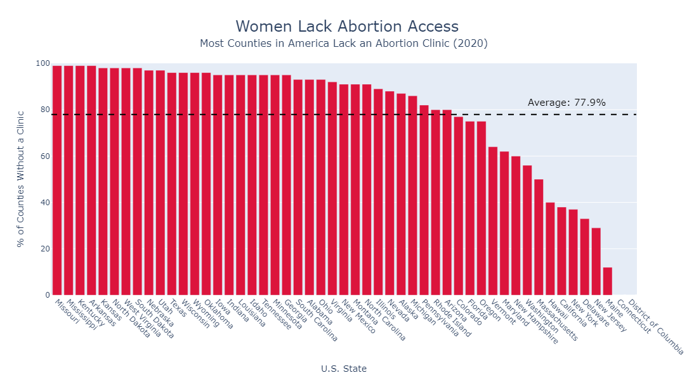
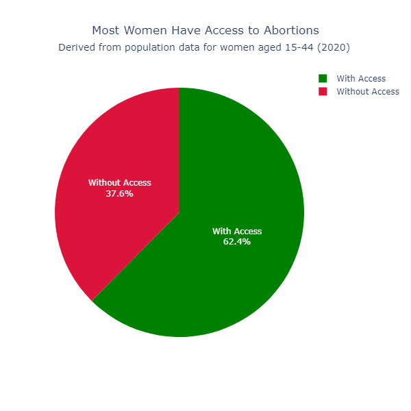

Proposition: A majority of women lack access to abortion clinics
FOR the Proposition

Design Decisions and Rationale:
- Title Framing: I give this a score of -1.5 since the data represents the percent of counties without abortion clinics, not the percent of women. Some large-population counties with clinics could serve many. I don't give it a -2 since they are correlated, if only slightly.
- Average Line & Annotation: I give this a score of -1 because although there may be value in seeing the average percent of counties without clinics over states, it doesn't really tell us about the number of women with access to abortion.
- Color Coding: I give this a score of -0.5 since it's slightly deceptive to use red to convey this message since it takes a pro-abortion stance by indicating that it's bad that many counties don't have abortion clinics.
AGAINST the Proposition

Design Decisions and Rationale:
- Population-Based Weighting: I give this a score of 2 since it's the most honest part of the visualization, especially since I collected external state population data to do the calculations, rather than using misleading percentages provided by the dataset.
- Color Coding (Green for Access, Crimson for No Access): I give this a score of -0.5 since it is slightly deceptive by indicating that access to abortion is a good thing which many people may not necessarily agree with.
- Binary Pie Chart: I give this a score of 1.5 since it's fairly honest to represent binary percentages in a pie chart. The only reason I don't give it a score of 2 is because a horizontal bar might better represent the ratios.
Final Reflection
One of the most challenging aspects of this assignment was coming up with opposing narratives using essentially the same dataset. Once I had a clear direction, though, I was surprised by how easy it was to make subtle yet persuasive design choices that shaped the viewer's interpretation. Before this project, I thought of data and statistics as objective, reliable tools for decision-making. Now, I realize how quickly they can become instruments of persuasion, or even manipulation, based on how they're visualized.
I now define ethical analysis and visualization as the practice of presenting data in a way that is truthful, responsible, and transparent. The goal should not be to mislead or confuse the audience, but to help them understand what is actually being shown. This means avoiding misleading titles, skewed color choices, or manipulative design elements that could distort the message of the data.
While the boundary between “acceptable” persuasive design and “misleading” design isn't always clear-cut, some choices are undeniably deceptive. For example, in my first, more misleading visualization, I claimed that women lack access to abortion care, when the data only measured counties without clinics. That may seem like a fair assumption at first glance, but in reality, large counties with clinics may serve large populations of women, making the claim inaccurate. This was a clear example of crossing the line into misinformation. Other decisions, like color schemes, can fall into a gray area, depending on context. The key difference lies in intent and clarity: Are you helping the viewer understand the truth, or nudging them toward a conclusion that isn't fully supported by the data?